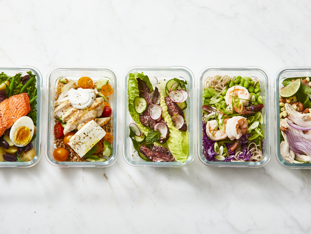

Lunch Break Preparation
Studying from home gives you the benefit of not having to stress about purchasing or preparing your lunch each day. With a short commute to your kitchen, you can put together something quick during your breaks. However, not everyone will want to cook their lunch each day, or may want to have something quick to hand. Here are some ideas for making your lunch a bit easier.
Meal Prep
Many people meal prep their food for the following week on a Sunday. This can alleviate the stress of deciding what to eat (some people even experience decision fatigue with their food options) and allows you to simply heat your lunch and get to eating.
Some planning is necessary here – you will have to decide whether you want to cook 5 of the same meal for one week, or cook several things to alternate throughout. Once this is decided, you can make an ingredient list and head to your nearest supermarket to pick up any necessary ingredients.
A good place to start would be something that you can make large batches of and freeze – such as soup, lasagne, or shepherd’s pie. Once these are cooked, the only thing you have to worry about throughout the week is taking a portion out of the freezer each night to defrost for the next day.
This option is our personal favourite, as it allows for some extra time to decompress during your break (or even do some extra work, if it tickles your fancy!)
Quick and Easy
Depending on what length your day is or what size meal you prefer to have around midday – a quick and easy meal to put together make suit you more. Things like bananas, porridge, peanut butter and nuts are good things to try and incorporate if you’re into small lunches, as they have protein and fibre and can help to keep you energized and full for longer.
Here are some great suggestions for quick, smaller sized lunches.
Winging it
If you're the type of person to step in the kitchen and prepare whatever catches your eye or takes your fancy, more power to you.
Some degree of planning is still necessary here, though, as you have to ensure your kitchen has the essentials for your favourite meals. Practicing 4-5 meals so that you can cook them with your eyes closed is also a good idea, so you are not stressing about cooking new dishes during your limited break time.
A good website to help you decide is My Fridge Food - you can enter all the ingredients in your kitchen in to this site. It gives you dishes and snacks you can make based off what ingredients you have at hand.
Regardless of what approach you'd like to take, make sure you prioritise feeding yourself regularly and well - nutrition is important for your body and for your mind!